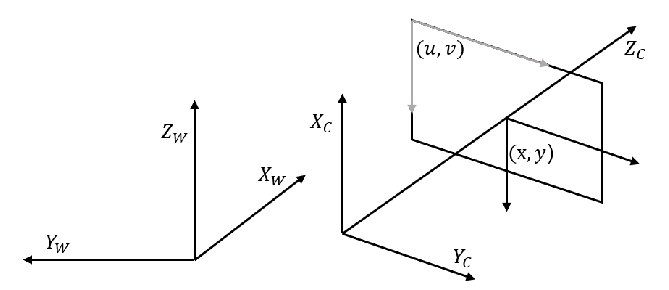
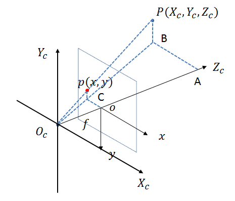

基本概念
- 成像（Imaging）：相机将三维世界映射到二维的像素平面
- 主点（Principal point）：相机光轴与图像平面的交点
- 焦距（Focal length）：从针孔到图像平面的距离
针孔模型
针孔相机是一个用以描述三维场景中物体坐标点与其二维映射之间关系的简化数学模型，原理是中学阶段就学过的光的直线传播。下面首先引入相机成像过程中所用到的几个坐标系，然后推导针孔模型中各个坐标系下对应坐标点间的转换关系。
坐标系的引入
引入以下坐标系，以及各坐标系下点的坐标
- 世界坐标系：($X_W$, $Y_W$, $Z_W$)
- 相机坐标系：($X_C$, $Y_C$, $Z_C$)
- 图像坐标系：($x$, $y$)
- 像素坐标系：($u$, $v$)

转换关系
世界坐标系 → 相机坐标系
点从世界坐标系到相机坐标系是三维坐标系之间的转换，可以通过旋转矩阵和平移向量实现：
相机坐标系 → 图像坐标系
在下图中，$O_C$为相机坐标系的原点，也是相机的光心，$o$为图像坐标系的原点，也是主点，$P$是相机坐标系中的点，$p$是图像坐标系中的点，$f$为焦距。不难看出，点从相机坐标系到图像坐标系的变换是一种透视投影的变换，通过中学所学的相似三角形可以推导出$p$与$P$之间的关系。

图像坐标系 → 像素坐标系
图像坐标系和像素坐标系都在成像平面上，只是各自的原点和度量单位不一样。图像坐标系中 $(x, y)$ 的单位是 mm，像素坐标系中 $(u, v)$ 的单位是 像素（pixel）。用$dx$和$dy$表示横向和纵向每个像素占据多少mm，用$(u_0, v_0)$表示图像坐标系原点在像素坐标系中的位置，两坐标系下点的转换关系如下
世界坐标系 → 像素坐标系
综上，可以得到世界坐标系下的点与像素坐标系下点的映射关系：
参考资料
- 许涵博. 面向自动驾驶系统的相机—激光雷达的自动标定[D].哈尔滨工业大学,2020.
- 计算机视觉：相机成像原理：世界坐标系、相机坐标系、图像坐标系、像素坐标系之间的转换_3)图像坐标系到像素坐标系的变换-CSDN博客